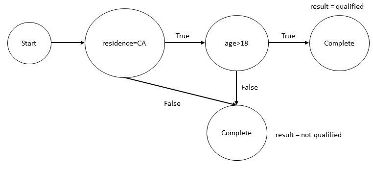
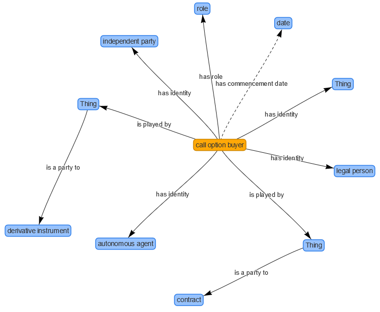
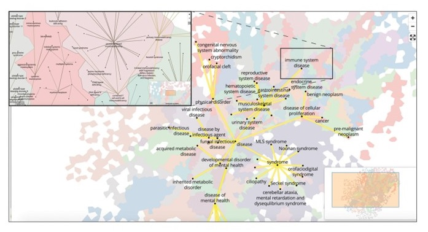

1. Introduction
Knowledge graphs are used in many domains, from biomedicine and
journalism to network security and entertainment. In this chapter, we
focus on two high-value families of applications: finance
and government.
2. Knowledge Graphs for Finance
We examine three distinct roles that knowledge graphs play in finance:
analytics, tax and financial calculations, and financial reporting.
Analytical knowledge graphs, which support querying and inference over
large datasets, are the most widely used today. Knowledge graphs for
financial calculations emphasize formal structure and rule-based
reasoning. Finally, using knowledge graphs to exchange financial
reporting data is an emerging application, driven by regulation and
the need for machine-interpretable disclosures.
2.1 Knowledge Graphs for Financial Analytics
Consider a large financial organization such as a bank that serves
millions of customers, including both individuals and companies. Such
organizations routinely face complex relational questions, many of
which can be expressed using the following templates:
- If a company goes into financial trouble, which of our clients are its suppliers or vendors? Are any of them applying for a loan?
- In a supply chain network, is there a single company that connects many others?
- Which startups have attracted the most influential investors?
- Which investors tend to co-invest?
- Which companies are most similar to a given company ?
- Which company might be a good future client for us?
Answering the first question requires supplier and vendor data, which
is often purchased from third-party providers and integrated with
internal customer data. This integration relies on schema mapping and
entity linking techniques discussed in Chapter 4. Increasingly,
financial institutions also use news data for market intelligence,
which requires entity and relation extraction from text, as described
in Chapter 5. Once this information is represented as a knowledge
graph, path-finding algorithms (Chapter 6) can be used to traverse
supplier and vendor relationships and answer the query. Visualizing
the resulting subgraph can further help analysts understand supply
chain dependencies.
The
second question can be addressed using centrality measures, such as
betweenness centrality, to identify companies that play a critical
connecting role.
The third question is relevant to startup valuation. It again requires
integrating investment data from external sources with internal data.
Here, centrality-based techniques such as graph-based PageRank can be
used to identify influential investors. Visualizing investment
networks helps reveal how these investors are connected to startups.
The fourth question is an example of community detection. In a
knowledge graph that represents investment relationships, groups of
investors who frequently co-invest often form identifiable
communities.
The fifth and sixth questions rely on graph embedding techniques,
introduced briefly in Chapter 1. Similarity between companies can be
computed using distances between their embedding vectors. Predicting a
potential future client is an instance of the link prediction problem:
rather than predicting the next word, as in language models, the goal
is to predict the most likely new relationships in the graph.
2.2 Knowledge Graphs for Income Tax Calculations
Income tax law in the United States spans more than 80,000 pages,
and over 150 million returns are filed each year. The law includes
thousands of forms and instructions, which change annually and
sometimes even mid-year. Tax preparation software makes this complex
body of law accessible, allowing end users to prepare and file
returns on their own.
Some tax tools represent the law as a set of rules. Once encoded as
rules, the system can perform calculations, generate user dialogs,
provide explanations, and check input completeness. While tax
computation relies on rule-based reasoning (Chapter 6), many
supporting operations -- such as assessing the impact of rule changes
or guiding user interactions -- are enabled by representing rules as a
knowledge graph and applying graph-based algorithms.
For example, consider the following simplified rule:
- A person is a resident of California, and
- The person is older than 18 years.
Expressed in Datalog, the rule is:
| qualified_for_tax_benefit(P) :- |
| resident_of(P, CA) & age(P, N) & min(N, 18, 18) |
From this rule, we can construct a knowledge graph, shown below:

Figure 1: An Example Calcuation Graph for an Income Tax Rule
If the taxpayer is 17 years old, reachability analysis on this graph
shows that the rule cannot be satisfied, so evaluating residency is
unnecessary. While this example involves only a single rule, real tax
systems contain thousands of interdependent rules, resulting in large
and complex knowledge graphs.
2.3 Knowledge Graphs for Financial Reporting
Financial institutions are required to report the derivative contracts
they hold, such as interest rate and commodity swaps, options,
futures, forwards, and various asset-backed securities. These reports
are important to compliance teams, brokers, and regulators. If each
institution reports in a different format, it becomes difficult to
process, aggregate, and analyze this information -- a classic data
integration challenge that knowledge graphs can address.
An industry-wide solution is the Financial Industry Business Ontology
(FIBO), a common semantic model defined using the Web Ontology Language (OWL).
FIBO specifies the key concepts in financial business applications and
the relationships between them. It provides a shared vocabulary that
can give meaning to diverse data sources, including spreadsheets,
databases, and XML documents. FIBO concepts are developed collaboratively
by financial institutions to reflect a consensus of industry-standard
concepts and data models.
FIBO includes concepts and terminology needed for reporting on
derivatives. For example, it defines that a Derivatives Contract
can have part one or more Options, and an Option
can have a call option buyer. The diagram below illustrates
how a call option buyer is connected to related entities in
the ontology:

Figure 2: Different relations associated with a call
option buyer in the FIBO ontology
This is an ontology graph: it captures relationships at the schema level
rather than the level of individual data values. For instance, it shows
that a call option buyer must be an independent party, a legal person,
and an autonomous agent. By using FIBO definitions in financial reports,
institutions can integrate their data with reports from other providers,
streamlining analysis and reducing costs.
FIBO development is driven by practical use cases. While derivatives
reporting is one example, other applications include counterparty
exposure, index analysis for ETFs, and exchange instrument data
management.
3. Knowledge Graphs for Government
Our discussion in this section is based on the Open Knowledge Network
(OKN) being created under the sponsorship of the National Science
Foundation. Inspired by specific use cases, OKN is interconnecting
openly available government data. We will consider in detail three
specific use cases: integrated justice platform, monitoring food
conatminants in the national food and water systems and precision
medicine. Even though these are independent projects, effort is being
made to explore uses cases that cut across different projects, and can
demonstrate the value of the Open Knowledge Network as a whole.
3.1 Integrated Justice Platform
The Systematic Content Analysis of Litigation EventS Open Knowledge
Network (SCALES OKN) aims to transform the transparency and
accessibility of federal court records by building an open, AI-ready
knowledge network that enables systematic analysis of the judiciary
for the benefit of the public, researchers, and policymakers. The initial
version of the SCALES OKN included data from all 94 U.S> district courts
with over 6 million triples.
A major challenge for the SCALES team has been that the current
court records generate a wealth of information, but much of it is
unstructured text. This includes (i) chronological entries on a
case's docket sheet and (ii) longer documents filed by the
parties or judge. While docket entries track the case events and the
parties' strategic choices, a full understanding of the case also
requires interpreting the attached documents, which often contain the
legal reasoning, arguments, and evidence underlying those
events. Without tools to synthesize both docket entries and associated
documents, it is difficult to grasp the complete history and context
of a case.
As an initial step towards understanding the case documents, the
SCALES team focused on annotating the documents so that judges,
parties, and events are identfied, searchable and analyzable. This
problem overlaps with the entity extraction task that we considered
in Chapter 5. Based on the initial annotations, the team developed
and tested regular expressions that could be used to extract the
same information towards the goal of generating an even bigger data
set for training natural language processing tools.
Another challenge addressed to give the users an ability to analyze
the court data and annotations. This requires developing protocols
to disambiguate entities -- litigants, lawyers, judges, third
parties, and others --- and discovering the complex relationships
amongst them as a case proceeds. To support this task, the team has
been developing an entity and event ontology.
The entity recognition task for court records has numerous unique
challenges. For example, a 2016 civil rights case from Indiana lists
current Transportation Secretary Peter Buttigieg as a defendant. That
case, however, was not brought against the person Peter Buttigieg, but
instead in his capacity as then-mayor of South Bend, Indiana. Knowing
in what role a party relates to a case can dramatically alter the
understanding of the case and its relevance as a feature in AI models.
Clear semantic definitions of roles vs person from the SCALES ontology
are essential for better training machine learning models.
3.2 Monitoring Contaminants in the National Food and Wster System
The Safe Agricultural Products and Water Graph (SAWGraph) is a
sophisticated Open Knowledge Network (OKN) designed to address the
critical environmental challenge of PFAS (per- and polyfluoroalkyl
substances) contamination. By integrating disparate datasets from
hydrology, chemistry, industry, and agriculture, SAWGraph provides a
semantic framework for tracing the flow of toxic forever chemicals
through the environment. The project serves as a premier example of
how knowledge graphs can bridge the gap between scientific silos,
allowing researchers and policymakers to move beyond isolated
spreadsheets toward a holistic understanding of how industrial
activities impact food and water safety.
Technically, the project utilizes a graph of graphs architecture,
aligning several domain-specific ontologies to maintain data
integrity across scales. It leverages the SOSA/SSN (Sensor,
Observation, Sample, and Actuator) ontology to standardize chemical
measurement data, alongside FoodOn for agricultural products and
NAICS codes for industrial facilities. A key innovation in its
design is the use of S2 cells -- a discrete global grid system -- to
handle spatial data. By mapping all environmental features to these
hierarchical cells rather than performing complex real-time
geometric intersections, the system achieves high-performance
spatial querying that is essential for identifying proximity-based
contamination risks.
Beyond simple data storage, SAWGraph enables advanced reasoning
through transitive connectivity within its hydrology and supply
chain components. This allows the graph to model upstream and
downstream relationships; for instance, a user can trace the path of
a contaminant from an industrial discharge point through river
networks and into the groundwater wells used for crop
irrigation. This ability to model flow and influence across
different physical domains demonstrates the power of knowledge
graphs in predictive modeling, specifically in identifying at-risk
agricultural lands that may not yet have documented contamination
but are hydrologically linked to known PFAS sources.
As a case study for knowledge graph implementation, SAWGraph
highlights the importance of interoperability and community
standards. The project demonstrates that the value of an
environmental knowledge graph lies not just in the volume of data it
contains, but in its ability to provide actionable decision support
through semantic queries. By creating a unified view of the
source-to-sink journey of contaminants, SAWGraph provides a scalable
blueprint for using semantic web technologies to monitor ecological
health and protect public resources in an increasingly complex
industrial landscape.
3.3 Precision Medicine
Scalable PrecisiOn Medicine Knowledge Engine (SPOKE) is an open
knowledge network that connects curated information from thirty-seven
specialized and human-curated databases into a single property graph,
With 3 million nodes and 15 million by a recent count. Much of this
data is composed of genomic associations with disease, chemical
compounds and their binding targets, and metabolic reactions from
select bacterial organisms of relevance to human health.
The development of the SPOKE is being driven by several precision
medicine questions. What are the potential side effects of a drug> How
can an existing drug be repurposed for new indications? Is a protein
invovled in a specific disese suitable for drug discovery?
SPOKE makes an extensive use of many of the concepts introduced in
this course. Extensive use is made of analyses such as centrality
to test the utility of specific nodes. User interfaces are designed
fro specific purposes. Instead of showing a hair ball view of the
graph, a multi-level neighborhood explorer is designed that resembles a
geographic map. Separate interfaces are designed for clinicians.

Figure 3: A map-like visualization of the knowledge graph in SPOKE
The Spoke Knowledge Graph was used to predict a potential treatment
to reduce mortality in COVID-19 patients on mechanical ventilation. By
tracing a path in Spoke from the ACE2 protein -- the receptor SARS-CoV-2
uses to enter cells -- to the drug dexamethasone, researchers uncovered a
previously unknown connection. Analysis of gene expression revealed
that mechanical stress from ventilation upregulates ACE2, while
dexamethasone suppresses the hormone midkine (MK), which mediates this
stress response. This creates a vicious cycle: ventilation intended to
support patients could inadvertently increase viral spread in the
lungs. Spoke helped "connect the dots" across multiple domains of
knowledge, suggesting that corticosteroids could break this
cycle. Subsequent clinical studies confirmed that corticosteroids
reduce mortality in ventilated COVID-19 patients by about 30%,
demonstrating the power of knowledge graphs to reveal hidden insights
in complex biomedical data.
4. Summary
Knowledge graphs have wide-ranging applications across industries,
enabling analytics, computations, and data exchange. In the
financial industry, knowledge graphs are applied to analytics,
calculations, and reporting, helping organizations uncover novel
insights, perform complex reasoning, and streamline data
integration. Government open data illustrates their power in
enabling solution of difficult problems ranging from drug discovery
to providing greater visibility into court processes. By making
heterogeneous data interoperable and queryable, knowledge graphs
reveal hidden patterns, support sophisticated decision-making, and
enable cross-domain insights. As more sectors -- including finance,
healthcare, and government -- adopt knowledge graphs, their role in
driving intelligent, data-informed strategies will continue to
expand and become increasingly mainstream.
5. Further Reading
Most graph database vendors maintain an inventory of use cases for
exploiting their technology. As an example, see the collection
maintained by Neo4j [Neo4j
Graph Use Cases]. An overview of the Open Knowledge Network and
the SPOKE and SCALES KGs discussed in this chapter can be found in a
special issue of the AI
Magazine [AIM
2022]. The current status of these projects along with an overview
of SAWGRAPH and several other related projects is available as part of
the OKN masteclass offered by the Edugate
project [Proto
OKN].
[Neo4j Graph Use Cases]
Neo4j. "Graph Database Use Cases and Solutions." Neo4j,
https://neo4j.com/use-cases/ . Accessed 29 December 2025.
[AIM
2022] AI Magazine Special Issue on The NSF Convergence Accelerator
Program
[Proto
OKN] Proto OKN Master Class offered as part of Edugate
Exercises
Exercise 9.1.
Suppose, you are facing the problem of finding alternative routes
in the face of a traffic jam. Which of the following graph
algorithms might be a good choice for this use case?
|
(a) |
A* Search |
|
(b) |
Minimal Spanning Tree |
|
(c) |
Random walk |
|
(d) |
All pairs shortest path |
|
(e) |
Depth-first Search |
Exercise 9.2.
Suppose, you are facing the problem of deciding the location of a
branch office in a city, and you need to choose the most accessible
location. Which graph algorithm might you use to help you make this
decision?
|
(a) |
Degree centrality |
|
(b) |
Closeness centrality |
|
(c) |
Betweenness centrality |
|
(d) |
Page rank |
|
(e) |
Public opinion survey |
Exercise 9.3.
Suppose, you are working on fraud analysis, and you need to check if
a group has a few discrete bad behaviors or is acting as a
systematic collection of entities, which of the following graph
algorithms might be ideally suited?
|
(a) |
Triangle count |
|
(b) |
Connected components |
|
(c) |
Strongly connected components |
|
(d) |
Page Rank |
|
(e) |
Fast unfolding algorithm |
Exercise 9.4.
An income tax application can use as knowledge graph in which of the following ways?
|
(a) |
Analyze the graph of rules to determine what inputs are required |
|
(b) |
Create a taxonomy of classes to better organize the tax calculation rules |
|
(c) |
Connect customer data with different investment opportunities |
|
(d) |
All of the above |
|
(e) |
None of the above |
Exercise 9.5.
Which of the following could not be achieved by financial ontologies such as FIBO?
|
(a) |
Stock recommendations that will outperform the market |
|
(b) |
A standard vocabulary to exchange information |
|
(c) |
Index analysis for ETF development |
|
(d) |
Analysis of counter party exposure |
|
(e) |
Exchange instrument data offering |
|
 CS520
CS520